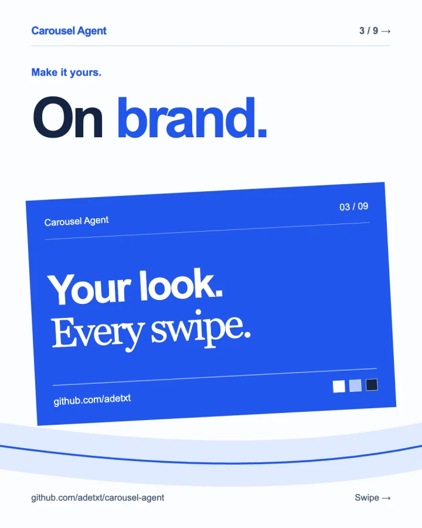
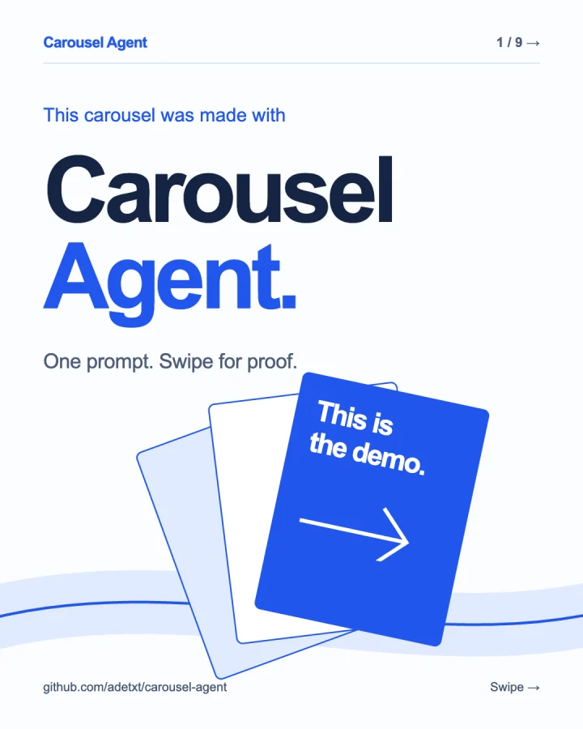

_adetxtCarousel Agent
PreviewThis carousel was made with Carousel Agent.
The slides are the demo.


7 stills + 2 motion slides
One prompt. A whole carousel. Make yours ↗
A skill for your AI agent
Bring the idea. Your agent turns it into social slides you can refine in conversation and export as PNGs or MP4s.
Editable HTML & CSS. Reusable brand kits.


The carousel is the demo
Real exports. Right in the feed.
Swipe through, and let the slides do the talking.
This carousel was made with Carousel Agent.
The slides are the demo.
One prompt. A whole carousel. Make yours ↗
The flex showcase · 9 slides · PNG + MP4
Swipe or drag. Slides 4 and 5 bring the motion.
offscript.journal Style has no straight lines. Wear your own story.
A fictional editorial. Made with Carousel Agent.
Seamless editorial · 4 slides · PNG
Swipe or drag to follow the artwork across each edge.
Interactive previews, not live posts. Likes and saves stay in this demo.
Editorial photography: Unsplash credits ↗
Stay in the conversation
A first draft is a starting point. Ask for a sharper hook, a new layout, or your own branding. Keep going until it feels right.
Read the workflowTopic, audience, platform. Bring a reference or brand kit if you have one.
“Make a four-slide seamless fashion carousel for Instagram. Bold editorial type, photography that carries across the edges.”
Your agent writes the layout and editable source. Give feedback in plain language.
“Make the first headline more direct. Keep the colors and typography.”
The skill guides your agent to render and visually check every slide. You get individual PNGs, MP4s for animated slides, and the HTML/CSS source.
Keep colors, type, logo, and handle in a shared kit for your next carousel.
Ask for motion when it helps explain a flow, chart, or idea. Export animated slides as MP4.
Portrait, square, vertical, landscape, or your own dimensions. One consistent size per carousel.
From here to your first carousel
Install with the skills CLI, then ask your agent to use carousel-agent.
npx skills add adetxt/carousel-agentFor a global installation, add -g.
Use carousel-agent to make a 6-slide LinkedIn carousel introducing my developer tool. Write for engineering leads, use a 4:5 portrait format, and end with an invitation to try the demo.
Requires Node.js 22+ and Chrome, Chromium, Edge, or Brave. Animated exports also need ffmpeg. The renderer has no npm dependencies.
It’s a skill you install in a compatible AI agent. Your agent creates local HTML/CSS files and runs the bundled renderer. This website shows what the skill can make.
No. Start with a generic design, reuse an existing kit, or share your colors, logo, typography, and handle. Your agent can keep your branding in a shared kit.
Animated slides export as individual MP4 files. Instagram carousels accept images and videos; LinkedIn document carousels use static slides. Ask your agent for the right output for your platform.
Run npx skills update carousel-agent. Add -g if you installed globally. For renderer options and source details, see the developer reference.